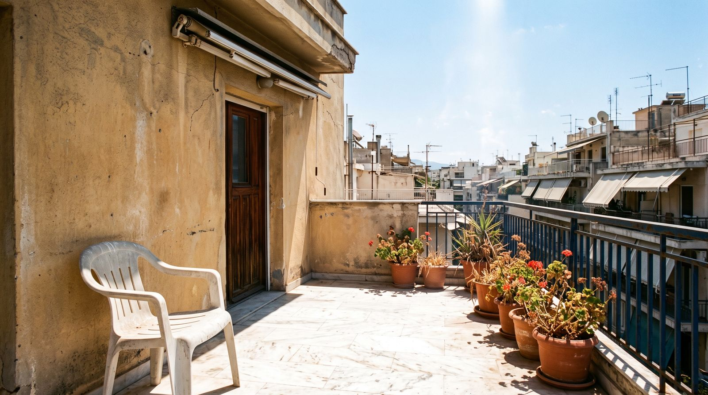
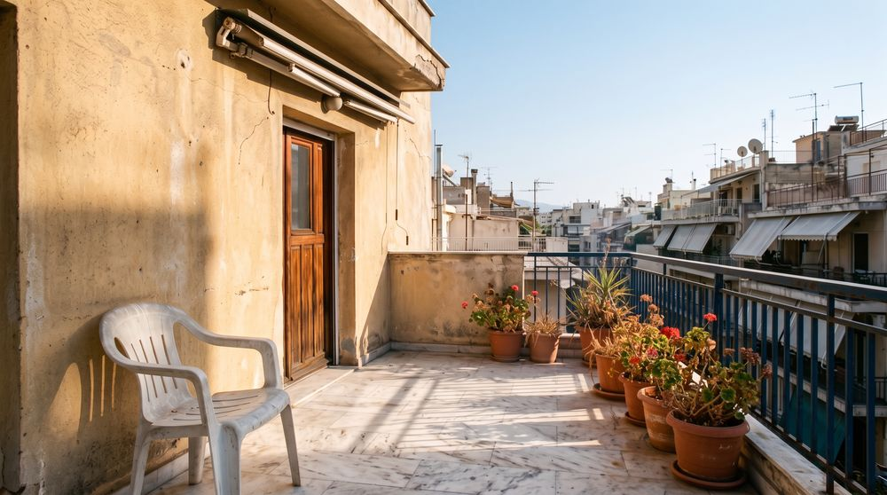
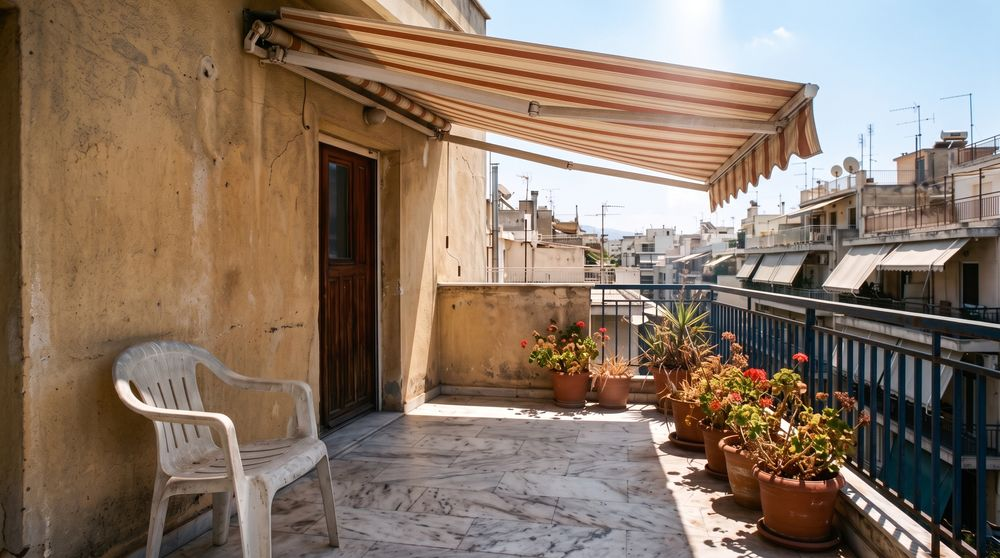
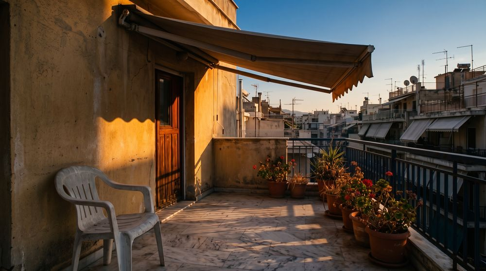

Βιοτεχνία τεντών · Γαλήνης 45, Ζωγράφου
Το μπαλκόνι σου, πίσω στη σκιά.
Τέντες, πέργκολες και συστήματα σκίασης. Μελέτη, κατασκευή και τοποθέτηση από το δικό μας εργαστήριο στη Ζωγράφου — όχι μεταπώληση.
Τι κατασκευάζουμε
Επτά τρόποι να μπει σκιά
εκεί που χρειάζεται
Κάθε μπαλκόνι, βεράντα και βιτρίνα έχει άλλο άνοιγμα, άλλον προσανατολισμό και άλλον τοίχο. Δεν πουλάμε έτοιμα κουτιά — μετράμε και κατασκευάζουμε.
Το φως στις 3
Ο ήλιος δεν μένει ακίνητος.
Ούτε η σκιά πρέπει.
Μια τέντα που δουλεύει το μεσημέρι μπορεί να είναι άχρηστη στις 6. Το βήμα, η κλίση και η προεξοχή υπολογίζονται από τον προσανατολισμό του δικού σου μπαλκονιού. Σύρε για να δεις τι αλλάζει μέσα στην ίδια μέρα.



14:00 — Ο ήλιος κάθετα από πάνω. Εδώ κρίνεται η προεξοχή: αν είναι λίγη, η σκιά δεν φτάνει μέχρι το τραπέζι.
Σύρε ή χρησιμοποίησε τα βελάκια
Υφάσματα & χρώματα
Ο σκελετός κρατάει.
Το πανί είναι που φαίνεται.
Το ύφασμα καθορίζει πόσο θα ξεθωριάσει, πόση θερμότητα θα κρατήσει έξω και τι χρώμα θα ρίχνει μέσα στο σπίτι σου στις 5 το απόγευμα. Ένα σκούρο πανί δίνει βαθιά σκιά· ένα ανοιχτό αφήνει φως να περνά. Στο εργαστήριο βλέπεις το δειγματολόγιο στο φυσικό φως, όχι σε οθόνη.
Ενδεικτικές αποχρώσεις
Ενδεικτικές οικογένειες αποχρώσεων. Οι πραγματικοί κωδικοί υφασμάτων επιλέγονται από το δειγματολόγιο στο κατάστημα.
Γρήγορη γραμμή
Έσπασε η τέντα;
Δεν χρειάζεται καινούρια.
Οι περισσότερες τέντες που μας φέρνουν για αντικατάσταση δεν θέλουν αντικατάσταση. Θέλουν έναν βραχίονα, ένα μοτέρ ή ένα καινούριο πανί στον υπάρχοντα σκελετό.
- Σπασμένος ή μπλοκαρισμένος βραχίονας
- Μηχανισμός που δεν μαζεύει
- Μοτέρ & αυτοματισμοί που σταμάτησαν
- Σκισμένο, ξεθωριασμένο ή μουχλιασμένο τεντόπανο
- Αλλαγή πανιού στον σκελετό που ήδη έχεις
Δωρεάν μέτρηση
Τέσσερις ερωτήσεις.
Μετά ερχόμαστε και μετράμε.
- Χωρίς χρέωση, χωρίς δέσμευσηΗ μέτρηση και η προσφορά δεν σε δεσμεύουν σε τίποτα.
- Γραπτή τιμή, αναλυτικάΣκελετός, πανί, μηχανισμός και τοποθέτηση ξεχωριστά — για να ξέρεις τι πληρώνεις.
- Μιλάς με αυτόν που θα το φτιάξειΔεν υπάρχει call center. Το εργαστήριο απαντάει.
Πού δουλεύουμε
Από τη Ζωγράφου
και γύρω
Το εργαστήριο είναι στη Γαλήνης 45. Όσο πιο κοντά είσαι, τόσο πιο γρήγορα ερχόμαστε για μέτρηση — και τόσο πιο εύκολα επιστρέφουμε αν χρειαστεί κάτι μετά.
- Ζωγράφου
- Άνω Ιλίσια
- Ιλίσια
- Γουδή
- Καισαριανή
- Βύρωνας
- Παγκράτι
- Αμπελόκηποι
- Χολαργός
- Παπάγου
- Κέντρο Αθήνας
Συχνές ερωτήσεις
Αυτά μας ρωτάνε
στο τηλέφωνο
Επικοινωνία
Πέρνα από
το εργαστήριο
- Διεύθυνση
- Γαλήνης 45, Ζωγράφου 15772, Αττική
- Σταθερό
- 210 775 1368
- Κινητά
- 697 041 7549 · 693 674 3560
- Ιδιοκτήτης
- Στυλιανός Π. Ξενιτίδης